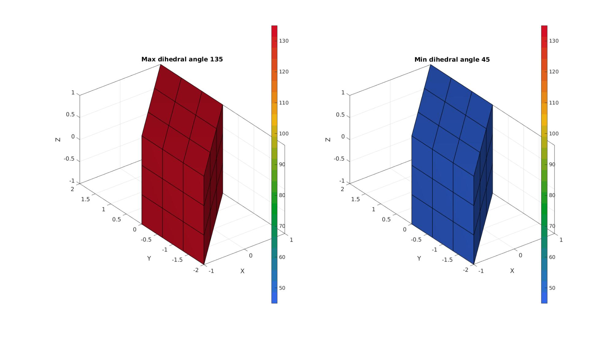
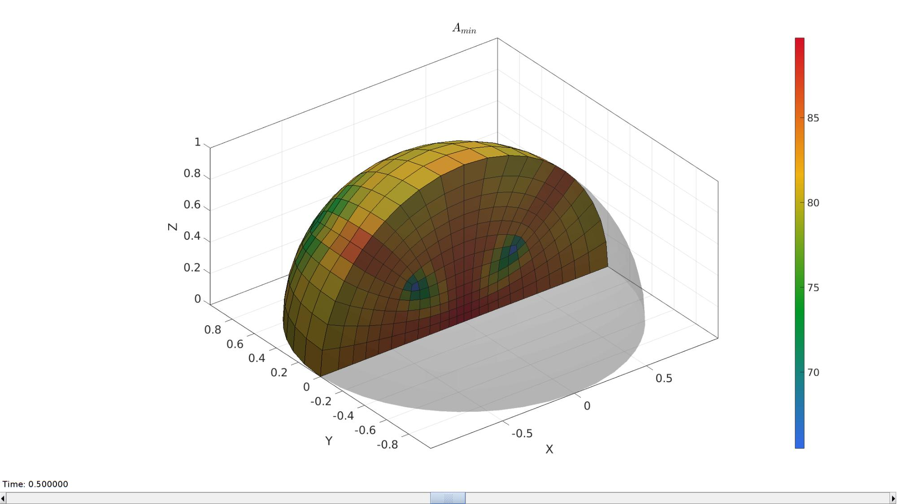
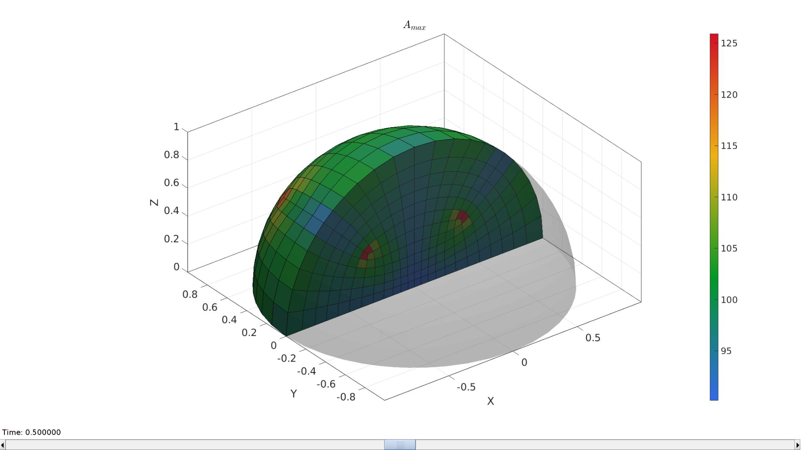

dihedralAngles
Below is a demonstration of the features of the dihedralAngles function
Contents
clear; close all; clc;
Syntax
| [A]=dihedralAngles(E,V,elementType);|
Description
This function computes the dihedral angles A for the input elements defined by E, the element nodal connectivity matrix, and V, the node or vertex coordinate matrix. The output array A contains the same number of rows as E (a row for each element), and contains m columns where m is the number of edges for this type of element (e.g. 12 for a hexahedral element or 6 for a tetrahedral element).
Examples
Plot settings
fontSize=20; faceAlpha1=0.8;
Example 1: Studing dihedral angles for a basic hexahedral mesh
Create mesh for a box
boxDim=2*ones(1,3); boxEl=3*ones(1,3); [meshStruct]=hexMeshBox(boxDim,boxEl); E=meshStruct.E; V=meshStruct.V;
Deformed into a sheared cube
d=eye(3,3); d(1,2)=1; V=V*d;
[A,EE,AE]=dihedralAngles(E,V,'hex8');
A=180*(A./pi);
AE=180*(AE./pi);
A_max=max(A,[],2);
A_min=min(A,[],2);
[F,A_max_F]=element2patch(E,A_max);
[~,A_min_F]=element2patch(E,A_min);
cFigure; subplot(1,2,1); hold on; title(['Max dihedral angle ',num2str(max(A_max_F))]) gpatch(F,V,A_max_F,'k',1,1); axisGeom; camlight headlight; colormap(gca,gjet(25)); colorbar; clim([min(A(:)) max(A(:))]); subplot(1,2,2); hold on; title(['Min dihedral angle ',num2str(min(A_min_F))]) gpatch(F,V,A_min_F,'k',1,1); axisGeom; camlight headlight; colormap(gca,gjet(25)); colorbar; clim([min(A(:)) max(A(:))]); gdrawnow;
Example 2:
% Creating a heme-sphere hexahedral mesh %Control settings optionStruct.sphereRadius=1; optionStruct.coreRadius=optionStruct.sphereRadius/2; optionStruct.numElementsMantel=6; optionStruct.numElementsCore=optionStruct.numElementsMantel*2; optionStruct.outputStructType=2; optionStruct.makeHollow=0; optionStruct.cParSmooth.n=25; % %Creating sphere [meshStruct]=hexMeshHemiSphere(optionStruct); % Access model element and patch data Fb=meshStruct.facesBoundary; Cb=meshStruct.boundaryMarker; V=meshStruct.nodes; E=meshStruct.elements;
[A,EE,AE]=dihedralAngles(E,V,'hex8');
A=180*(A./pi);
AE=180*(AE./pi);
A_max=max(A,[],2);
A_min=min(A,[],2);
Visualize mesh
hFig=cFigure; hold on; title('$A_{min}$','FontSize',fontSize,'Interpreter','latex'); gpatch(Fb,V,'kw','none',0.25); %Boundary as transparent optionStruct.hFig=hFig; meshStruct.elementData=A_min; meshView(meshStruct,optionStruct); axisGeom(gca,fontSize); gdrawnow; hFig=cFigure; hold on; title('$A_{max}$','FontSize',fontSize,'Interpreter','latex'); gpatch(Fb,V,'kw','none',0.25); optionStruct.hFig=hFig; meshStruct.elementData=A_max; meshView(meshStruct,optionStruct); axisGeom(gca,fontSize); drawnow; 

GIBBON www.gibboncode.org
Kevin Mattheus Moerman, gibbon.toolbox@gmail.com
GIBBON footer text
License: https://github.com/gibbonCode/GIBBON/blob/master/LICENSE
GIBBON: The Geometry and Image-based Bioengineering add-On. A toolbox for image segmentation, image-based modeling, meshing, and finite element analysis.
Copyright (C) 2006-2023 Kevin Mattheus Moerman and the GIBBON contributors
This program is free software: you can redistribute it and/or modify it under the terms of the GNU General Public License as published by the Free Software Foundation, either version 3 of the License, or (at your option) any later version.
This program is distributed in the hope that it will be useful, but WITHOUT ANY WARRANTY; without even the implied warranty of MERCHANTABILITY or FITNESS FOR A PARTICULAR PURPOSE. See the GNU General Public License for more details.
You should have received a copy of the GNU General Public License along with this program. If not, see http://www.gnu.org/licenses/.